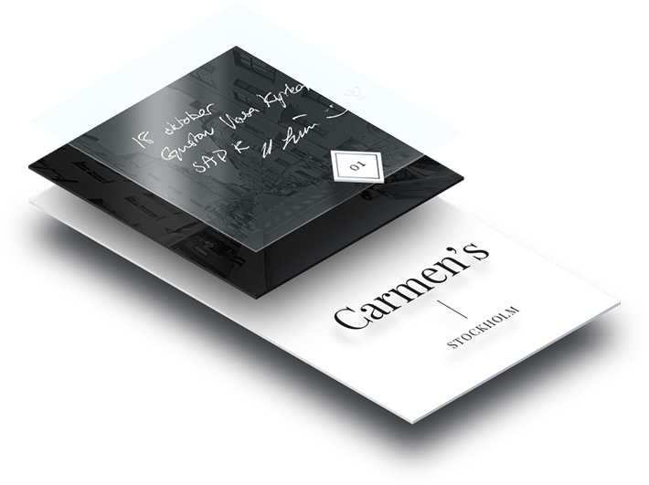
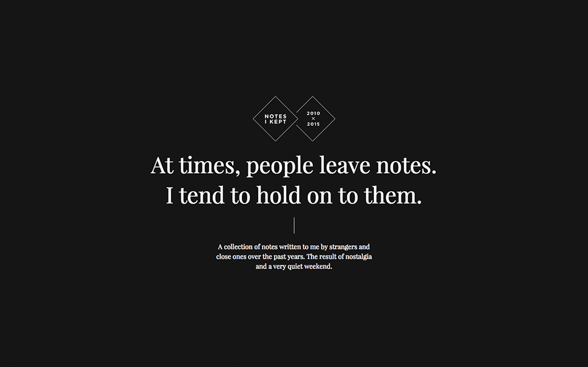
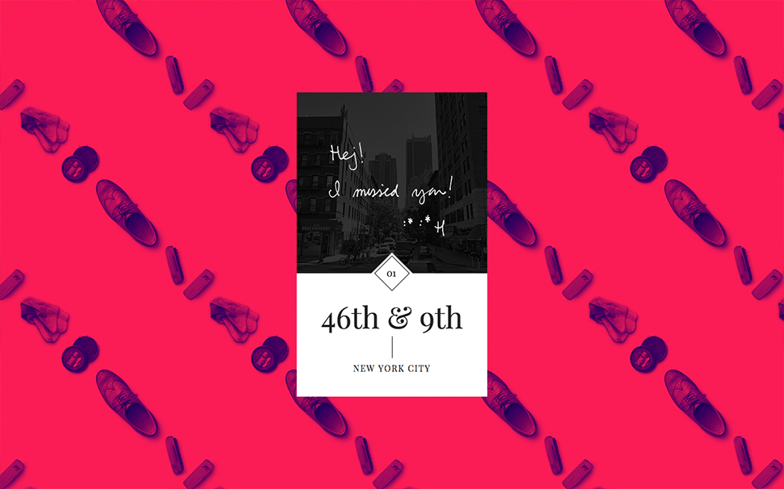
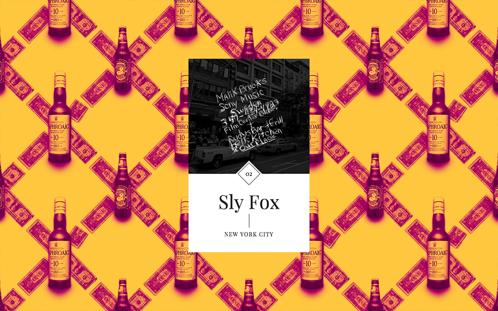
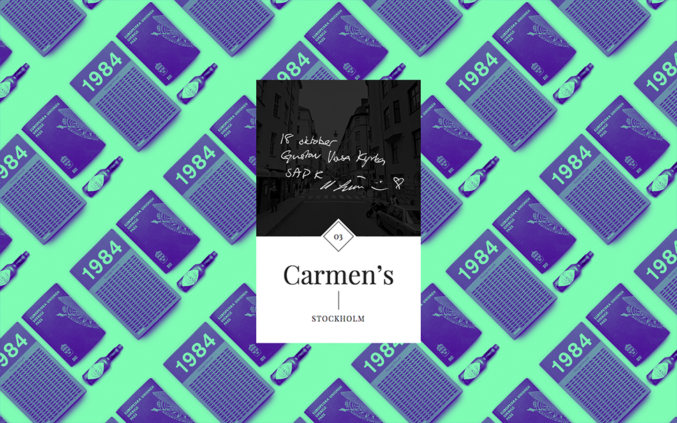
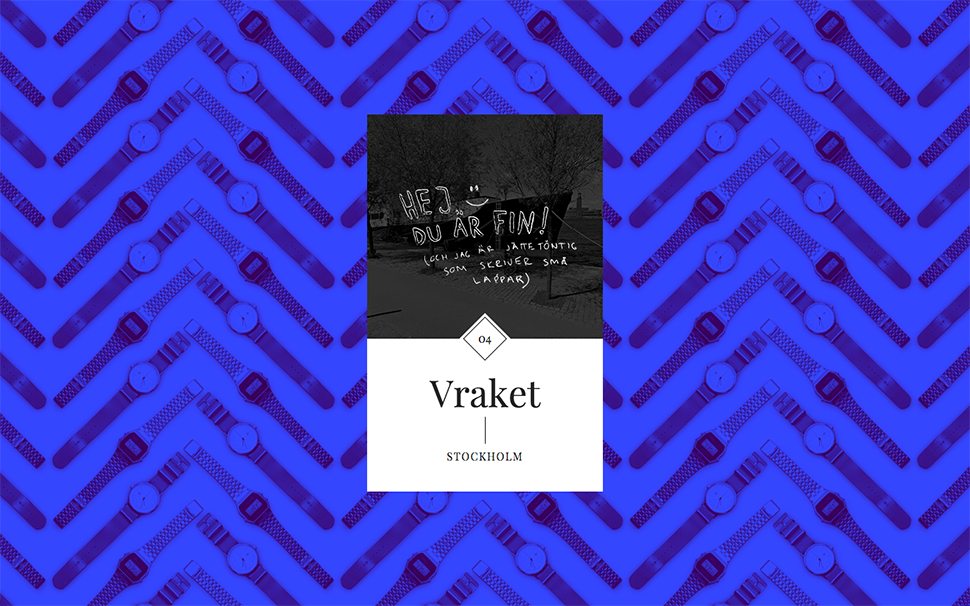
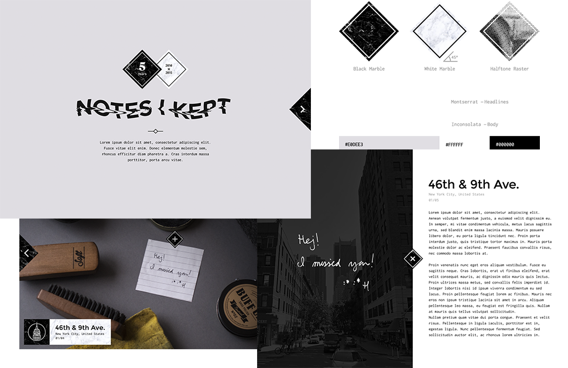

Purpose
A personal project of mine: A growing collection of notes that people have given to me. It was a perfect project to experiment with patterns and design while getting to know some new css tricks and js libraries.

Technology
Github — Manage code
Github Pages — Hosting
CodeKit — Compile SCSS, JS etc.
jQuery — JS library
QueryLoader 2 — Preloader library
Vivus.js — SVG animations
WOW.js — Animated scroll reveal
Animate.css — Simple CSS animations.






Early Direction
The beauty of a personal project is that you have time to explore many different routes. Below you can see one of my discarded concepts. In the end it felt too serious — I wanted to head for a simple and more colorful experience.
Thank you for watching!